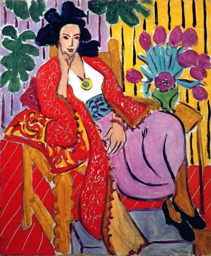
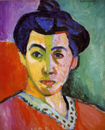
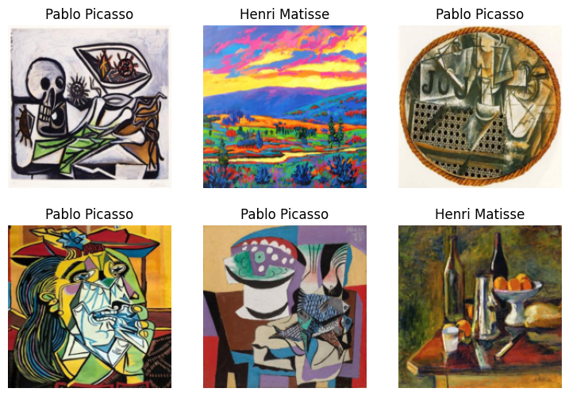

# install the latest libraries
!pip install -Uqq fastai duckduckgo_searchAnnouncments
Finally back! Had some deadlines followed by issues with gradio, kaggle, Firefox gtk, quarto and jupyter but now everything is working for me to publish this post. I’d like to give a shoutout to Kevin Liu for his help in getting up to speed with the updated gradio API. Kevin reviewed my gradio example and took some helpful notes about the errors he ran into which helped me debug the differences between the current version of gradio and that used in Tanishq’s example.
Summary
In this lesson, Jeremy walks through a bear classification model example and then spends most of the lesson focusing on how to deploy a model into production. The production example in this lesson works well for personal projects but is different from what the process is in industry. I thought it was a useful lesson for how to quickly get a model and simple web interface up and running.
My Thoughts
Although Jeremy didn’t directly address this in the lecture video, designing user interfaces for data science tasks is difficult (this is based on my personal experience) because there are many different requirements to satisfy. If your audience is a boss, manager, team, data scientists, they probably want to interact with a model ASAP. To save development time and get a basic application working tools like gradio, streamlit, altair and colab do a great job but trade performance, user experience and features for iteration speed and immediate results. Another audience is enthusiasts and expert users who want a core set of features that address performance, utility, interaction, and end user experience who may be willing to trade development time for a well crafted interactive data experience. For these needs, tools like D3, Svelte, Vue, React will give greater control and freedom for creative expression and delivery but require significant development time and testing.
I would probably start off with gradio or streamlit for prototyping and then gradually work with a designer/web developer to build a scalable performant web interface to interact with the model. Through personal experience, I’ve learned that debugging python code that renders javascript, html and css for the web can be a nightmare especially when working with 1,000+ datapoints for interactive web data interfaces.
Gradio reminded me a lot of streamlit. I liked streamlit for its simplicity in creating components but the downside was that its simplicity offered few opportunities for cusomizing components beyond what streamlit offered. The syntax for both streamlit and gradio were difficult for me to follow initially because during debugging I sometimes ran into web rendering bugs that were caused by the way I used a function from the streamlit/gradio library. Through trial and error I figured out what works but the process took a long time because I couldn’t come up with an effective development process.
I try to avoid using streamlit and gradio whenever I can but the process of learning how to set up gradio and deploying a model + interface on hugging face spaces was definitely worth it. I might come back to this lesson in the future once I finish the rest of the course to experiment with how to build an interface for a model.
Jeremy Howard’s Advice
- Train a model before data cleaning because it helps find data issues more quickly and easily.
Terminology
Object Recognition - Computers can recognize what items are in an image at least as well as people can.
Object Detection - Computers can recgonize where objects in an image are, and can highlight their locations and name each found object.
Segmentation - A sub-area of object detection where every pixel is categorized on what kind of object it is part of
Data Augmentation - creating random variations of our input data such that they appear different but do not change the information in the data. Augmentation techniques for images include rotation, flipping, perspective warping, brightness, contrast.
Picasso or Matisse Model
Inspired by Jeremy’s bear example, I changed my Picasso Braque example from my previous post and decided to instead try two different artists who weren’t so similar, in this case I chose Henri Matisse and Pablo Picasso. I trained the model the same way I did the Picasso Braques example but one thing I noticed was that some of the images seemed off for a duckduckgo search where duckduckgo would pull up a portrait of Picasso that didn’t look like it was from the same period I was searching. To try and fix this I tried to refresh the notebook runs multiple times until I got base images from actual Picasso and Matisse paintings. Similar to the Picasso Braque example, my Picasso predictions were off even though the label was correct but the Matisse ones were accurate.
After I tried Picasso and Matisse paintings, I tried different Picasso artworks such as his sculptures and got correct classifications. One person I shared the model with tried uploading their family thanksgiving photo to see what happened and the model classified the photo as 97% Picasso. This was quite intriguing to me because I had not even trained the model on images other than picasso and matisse paintings. I’m only writing on Lesson 2, but Jeremy’s discussion about transfer learning in Lesson 1 and the book has me wondering if the classification of the 97% Picasso Thanksgiving photo is a bug and use case I didn’t consider or if it has something to do with the resnet-18 base model with how it picked up the color, line and movement.
Step 1: Gather Data
from duckduckgo_search import ddg_images
from fastcore.all import *
# helper function for searching for images
def search_images(term, max_images=30):
print(f"Searching for '{term}'")
return L(ddg_images(term, max_results=max_images)).itemgot('image')urls = search_images('Pablo Picasso Fauvism Paintings', max_images=1)
urls[0]Searching for 'Pablo Picasso Fauvism Paintings'/usr/local/lib/python3.10/dist-packages/duckduckgo_search/compat.py:40: UserWarning: ddg_images is deprecated. Use DDGS().images() generator
warnings.warn("ddg_images is deprecated. Use DDGS().images() generator")'https://i.pinimg.com/736x/b5/69/e1/b569e151ba0a9adf0136f5bdd7d4401b.jpg'from fastdownload import download_url
from fastai.vision.all import *
dest = 'picasso.jpg'
download_url(urls[0], dest, show_progress=False)
im = Image.open(dest)
im.to_thumb(256, 256)
download_url(search_images('Henri Matisse Fauvism Paintings', max_images=1)[0],
'matisse.jpg',
show_progress=False)
Image.open('matisse.jpg').to_thumb(256, 256)Searching for 'Henri Matisse Fauvism Paintings'/usr/local/lib/python3.10/dist-packages/duckduckgo_search/compat.py:40: UserWarning: ddg_images is deprecated. Use DDGS().images() generator
warnings.warn("ddg_images is deprecated. Use DDGS().images() generator")
searches = 'Pablo Picasso', 'Henri Matisse'
path = Path('picasso_or_matisse')
from time import sleep
for o in searches:
dest = (path/o)
dest.mkdir(exist_ok=True, parents=True)
download_images(dest,urls=search_images(f'{o} fauvism paintings'))
sleep(10) # sleep between searches to avoid spamming server
download_images(dest,urls=search_images(f'{o} still life fauvism paintings'))
sleep(10) # sleep between searches to avoid spamming server
download_images(dest,urls=search_images(f'{o} fauvism scenic paintings'))
sleep(10) # sleep between searches to avoid spamming server
resize_images(path/o, max_size=400, dest=path/o)Searching for 'Pablo Picasso fauvism paintings'
Searching for 'Pablo Picasso still life fauvism paintings'
Searching for 'Pablo Picasso fauvism scenic paintings'
Searching for 'Henri Matisse fauvism paintings'
Searching for 'Henri Matisse still life fauvism paintings'
Searching for 'Henri Matisse fauvism scenic paintings'Step 2: Train Model
# remove images that failed to download properly
failed = verify_images(get_image_files(path))
failed.map(Path.unlink)
len(failed)0# split data into training set, validation set
dls = DataBlock(
# specify input type(image), output type(category aka label)
blocks=(ImageBlock, CategoryBlock),
get_items=get_image_files,
# split data into 80% training data, and 20% validation data
splitter=RandomSplitter(valid_pct=0.2, seed=42),
# define the label
get_y=parent_label,
# standardize and resize all images to 192 x 192
item_tfms=[Resize(192, method='squish')]
).dataloaders(path, bs=32)
dls.show_batch(max_n=6)
# train a resnet model on the data
learn = vision_learner(dls, resnet18, metrics=error_rate)
learn.fine_tune(4)| epoch | train_loss | valid_loss | error_rate | time |
|---|---|---|---|---|
| 0 | 1.003311 | 0.399668 | 0.160377 | 00:04 |
| epoch | train_loss | valid_loss | error_rate | time |
|---|---|---|---|---|
| 0 | 0.362328 | 0.233523 | 0.084906 | 00:02 |
| 1 | 0.323960 | 0.221361 | 0.075472 | 00:03 |
| 2 | 0.253416 | 0.133047 | 0.037736 | 00:04 |
| 3 | 0.199347 | 0.111490 | 0.037736 | 00:02 |
Step 3: Test Model
is_picasso,_,probs = learn.predict(PILImage.create('picasso.jpg'))
print(f"This is a: {is_picasso}.")
print(f"Probability it's a picasso: {probs[0]:.4f}")This is a: Pablo Picasso.
Probability it's a picasso: 0.0005is_matisse,_,probs = learn.predict(PILImage.create('matisse.jpg'))
print(f"This is a: {is_matisse}.")
print(f"Probability it's a matisse: {probs[0]:.4f}")This is a: Henri Matisse.
Probability it's a matisse: 0.9936Step 4: Save and Export Model
learn.export('model.pkl')Gradio + Hugging Face Spaces
The following code was originally written by Dr. Tanishq Abraham and published in the blog post: Gradio + Hugging Face Spaces: A Tutorial. It was modified by me and Kevin Liu to work with the current version of the gradio api. Currently the code works on Hugging Face Spaces but may break in the future as gradio continues updating its API.
My recommendation to get gradio and Hugging Face Spaces working is to start off with Tanishq’s article and consult the gradio documentation to figure out the differences between the current version of the API and the version used in the article. I tried getting the pet classifier example working first before moving on to applying gradio to my Picasso Matisse Model which saved a lot of headache trying to figure out how git LFS and Hugging Face Spaces worked with my example.
import gradio as gr
from fastai.vision.all import *
import skimage
# load model
learn = load_learner('model.pkl')
# define prediction function
labels = learn.dls.vocab
def predict(img):
img = PILImage.create(img)
pred,pred_idx,probs = learn.predict(img)
return {labels[i]: float(probs[i]) for i in range(len(labels))}
# define interface structure
title = "Picasso or Mattise Classifier"
description = "A classifier trained on Pablo Picasso and Henri Mattise paintings with fast.ai."
examples = ['picasso.jpg', 'matisse.jpg']
gr.Interface(fn=predict, inputs=[gr.Image(type="pil")], outputs=gr.Label(num_top_classes=3)).launch(share=True)
# interpretation = 'default'
# enable_queue = True
# def greet(name):
# return "Hello " + name + "!!"
# iface = gr.Interface(fn=greet, inputs="text", outputs="text")
# iface.launch()